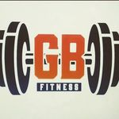

Los estudios científicos actuales demuestran que el entrenamiento de fuerza es uno de los métodos con mayor impacto sobre el sistema músculo-esquelético y de los más eficaces para prevenir la debilidad y fragilidad y sus nefastas consecuencias. Realizados de forma regular (2-3 veces por semana), el entrenamiento muscular incrementa la fuerza y la masa muscular y favorece unos elevados niveles de independencia y vitalidad en edades más avanzadas. Mejora la composición corporal. La inactividad física causa, de media, una pérdida de masa muscular de entre 3 y 8 kilos por década. Esta pérdida de masa muscular se traduce en una reducción 2 al 5 por ciento del ritmo metabólico. Las calorías que antes se consumían como energía muscular se dedican a ser almacenadas como depósitos energéticos en forma de grasa. Esto se traduce en una progresiva ganancia de peso corporal. Se ha demostrado que un protocolo de entrenamiento de fuerza de tres meses de duración puede resultar en incrementos de 1,5 kilos de masa muscular y pérdidas de 2 kilos de grasa, incluso ingiriendo un 15% más de calorías. Una mayor masa muscular activa el metabolismo basal (quemamos más calorías incluso en reposo). También ayuda a reducir el porcentaje de masa grasa. Puede ser que el peso se mantenga, pero estará compuesto por más músculo y menos grasa. El principal factor a la hora de mantener una postura correcta son los músculos. Una musculatura fuerte contribuye a mantener una buena postura sin esfuerzo. Una postura saludable no solo previene dolores y contracturas de la espalda, cuello y hombros, sino que también mejora la función del aparato circulatorio y digestivo, entre otros.
